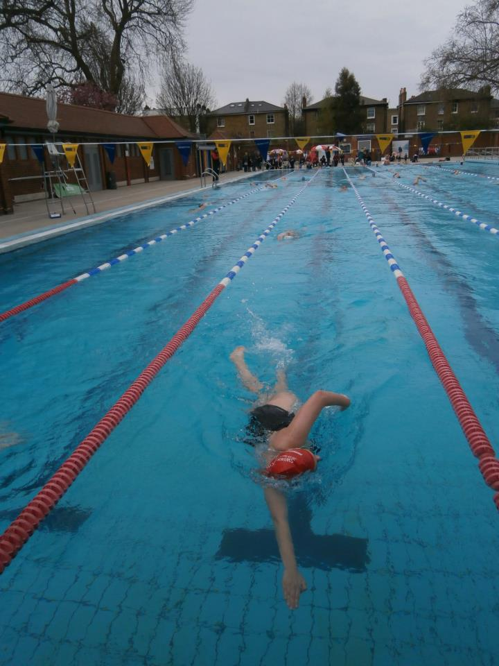

About me
I am a recently graduate from Kingston University (2014-17), where I studied Physical Geography and graduated with a 2:1. I’m currently furthering my expertise in the field of Geographical Information Systems, studying for an MSc in GIS at The University of Leeds.
My interest for geography truly began within the Lake District in Cumbria, where I spent much of my childhood. The love of the outdoors and nature was born by hiking, kayaking and swimming in the national park here, a time in my life I would never alter.
.jpg)

Through my adolescence and time at university, I have gained and continued a passion for multiple sporting activities. My focus through most of life was my swimming, a focus that resulted in me gaining a NPLQ Lifeguarding and a Health and Safety in the Workplace certificates in 2013, resulting in myself working as a lifeguard throughout my undergrad. The love of swimming also led me into swimming multiple Swimmathon’s with my sister and mother in 2014 and 2015 in Brockwell lido, both resulting in gaining £200 for Cancer Research.
My University time also allowed me to pursue new hobbies such as joining the Kingston University Woman’s Rugby Club (KUWR), where I spent two years. The wonderful team I joined helped expand my social circle with the wonderful team, and allowed myself to relieve the stress of university work onto the pitch. In my first year at Kingston I also dabbled into the film society and triathlon team, but this was a shorter lived passion.
